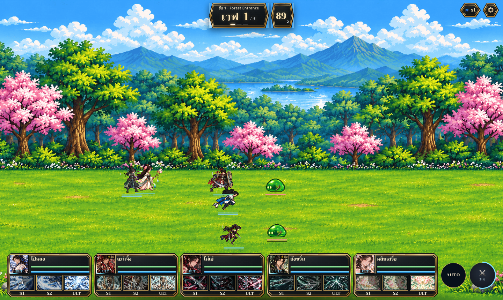

Battle Start — แบบที่เลือกและเกมจริง
Desktop1440×860 · ลบสอง tagline และขยายชื่อแมพ/ชั้นตามคำขอ ภาพเกมจริงมาจาก Angular/Pixi โดยหยุดเฟรมแอนิเมชันที่600msเพื่อดูรายละเอียด ภาพอ้างอิงยังเป็นภาพออกแบบและปรับเฉพาะข้อความ/ชื่อด่านที่ผู้ใช้สั่ง รายงาน flow แยกใช้การเล่นจริงที่ไม่หยุดเฟรม

เริ่มต่อสู้หลังเตรียมพร้อมและเปิดฉากเสร็จ
ไม่มีการเปลี่ยน clip/combat timing หรือระบบเซฟ งาน Mobile พักไว้ตามคำสั่งผู้ใช้ ยังไม่มี master merge หรือ deploy